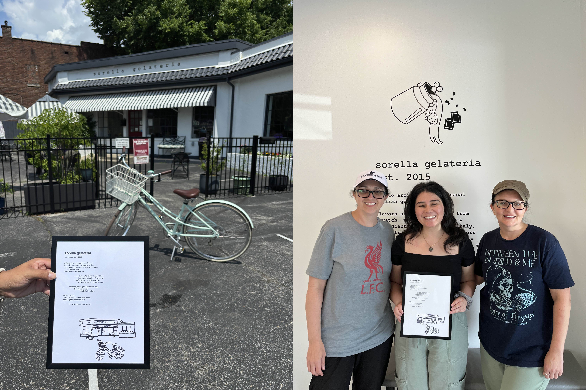
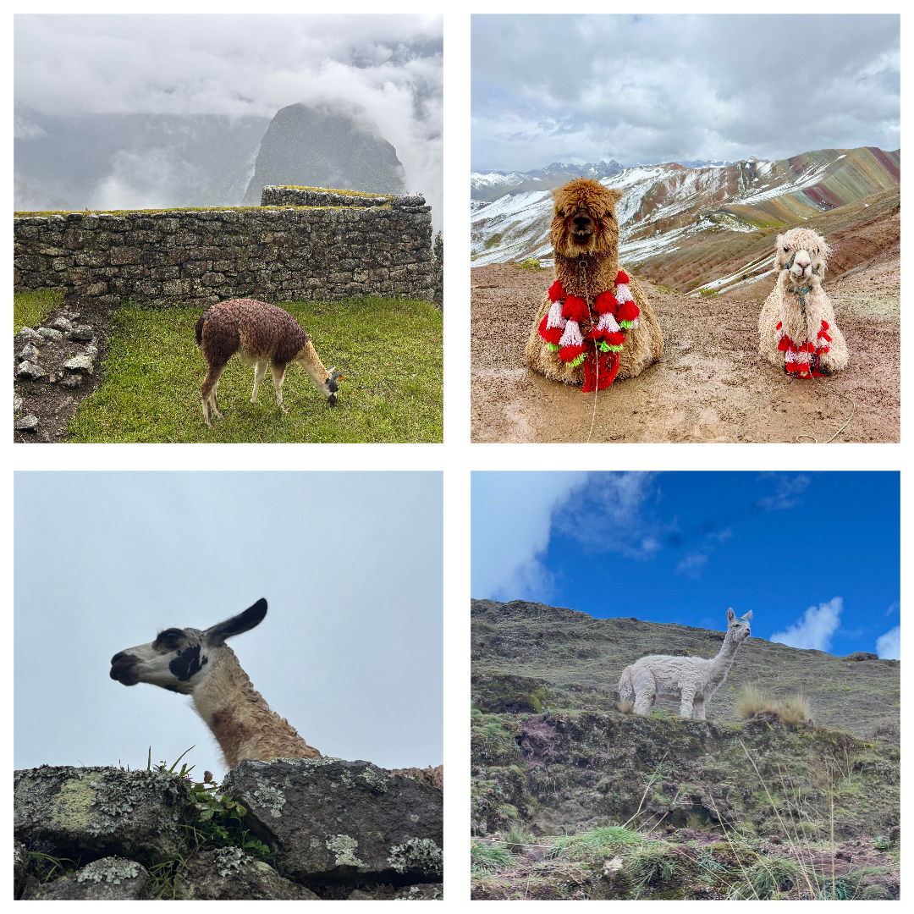
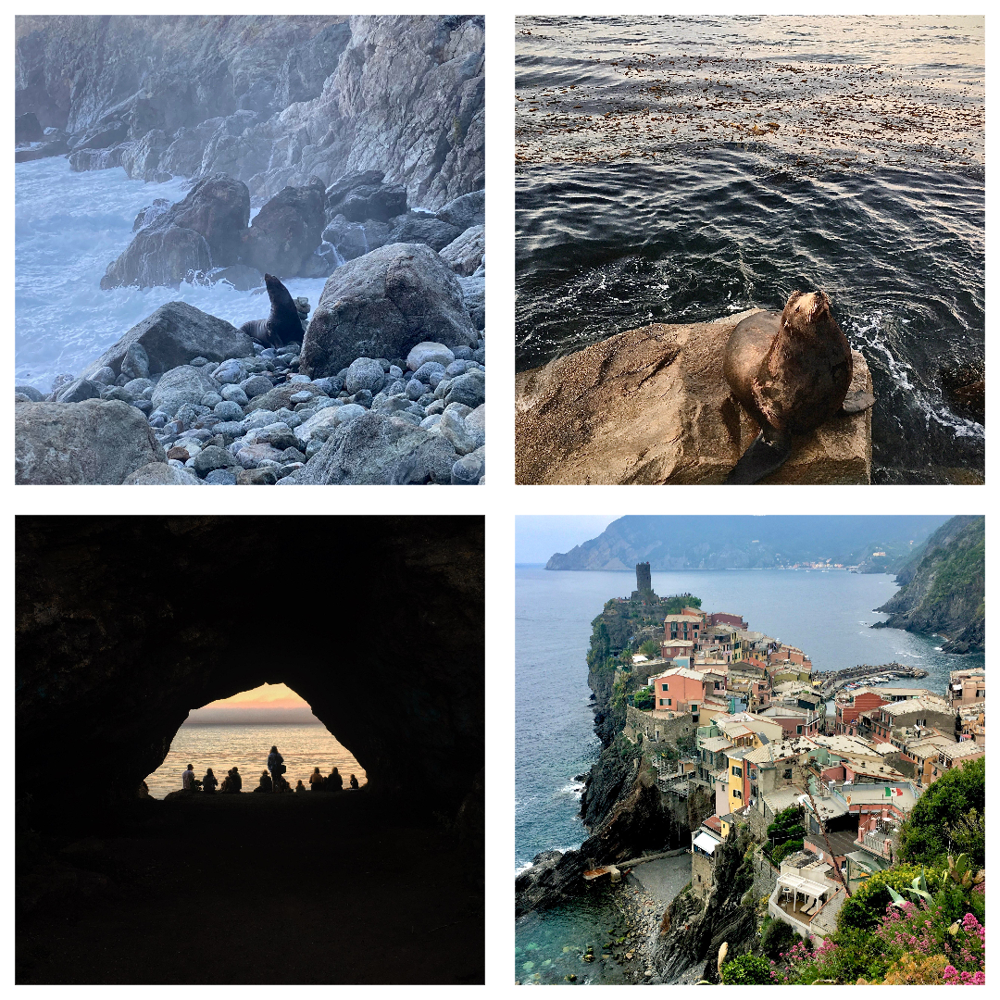
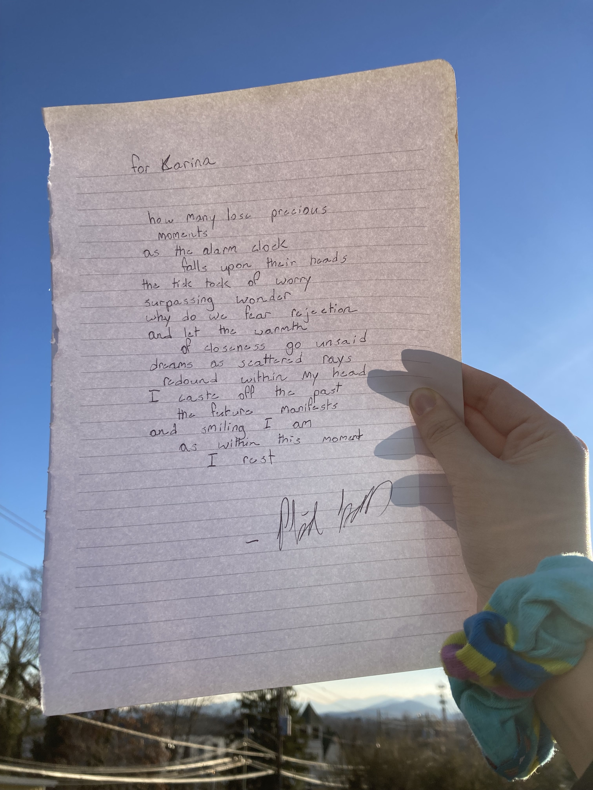
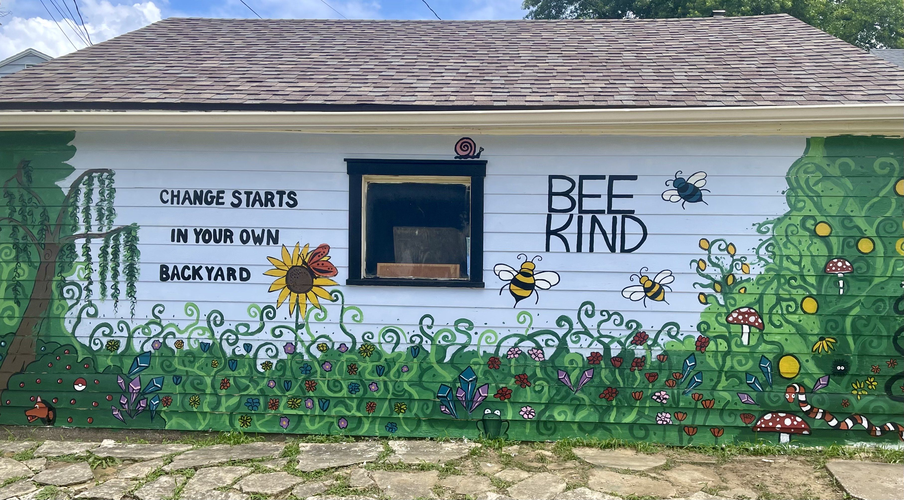

Below are selections from my artistic portfolio, including fiction, poetry, spoken word, dance, photography, songwriting, music performance, and visual arts. My strongest work is in fiction and poetry, though many of those pieces are reserved for future publication.
Fiction
The Serpent’s Utopia, published in a local anthology on the theme of crossroads, is a spoken-word short story inspired by Genesis that explores how growth emerges only when we embrace discomfort and risk.
This piece was written to be heard. Press play to listen to the recorded performance.
Poetry
They want us addicted to dopamine.
My Phony Friend
The Violinist’s Ballad
Outside The Box
Sorella Gelateria
Click for more details:
What an incredible joy it is to gift poem & art to my favorite small business. I adore the summers filled with bike rides to the local gelateria run by two sisters. The love and tears received warmed my heart.

History of Humanity
Spoken Word
Dance
My partner and I won third place in a Salsa Competition with our very first performance and original choreography. I usually dance socially with improvised moves and musicality, but I really enjoyed leaning into the story and emotion for this piece.
Photography
 
Songwriting
All songs were created in 2022 to explore lyric and melody.
Click for more details:
This song began at a Poetry On Demand stand in Asheville, NC. I shared a few words, and the poet wove them into a poem. I loved it so much that I made it into a song. The original poem is included below. 
Click for more details:
This song came from a playful challenge: I asked a friend for random words to make them into lyrics. The chosen words were:
- Pomegranates
- Blue bonnets
- Sweater vest
- Sunset
- Georgia
- Wagon wheel
Click for more details:
This song came from a playful challenge: I asked my partner for random words to make them into lyrics. The chosen words were:
- Cotton candy
- Twix
- Penguin
- New York City
- Ice skating
Violin
Although I no longer play, violin was once a deep passion of mine. Below are videos from when I was 17/18.
Violin Looper Performance of “Secrets” by OneRepublic, in the style of Bryson Andres
Chamber Orchestra Performance of my arrangement to Lana Del Rey’s “Young And Beautiful”
Violin & Cello Duet Practice (unfortunately, I no longer have the composer’s name)
Visual Art
This garage mural was a collaboration between my friend, her husband, my sister, and me. It has since become a neighborhood landmark, bringing smiles to those who pass by.
